Trente comparaisons sans sélection flatteuse
Même caméra, date et météo, Mission 16 et 17D. Tous les arbres du pilote sont conservés. Les cinq captures du propriétaire n’étaient pas jointes au texte reçu : ces stations ne sont pas des correspondances exactes revendiquées.
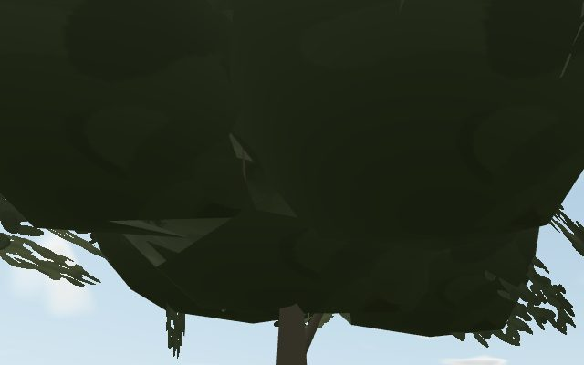
Avant · Mission 16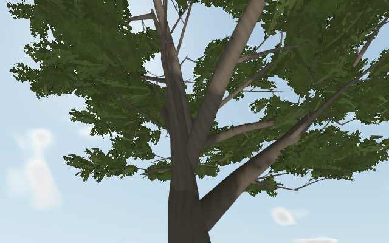
Après · Mission 17DPositions et protocole. À cinq mètres, le cadrage coupe volontairement la haute couronne. La vue lointaine est une caméra de revue. Des pousses planes restent perceptibles aux niveaux les plus économiques.
Le mouvement à sa cadence native
SwiftShader est un GPU logiciel. Ces films conservent ses images lentes et ses à-coups. Seul le diagnostic du calendrier accélère les saisons. Aucun filtrage de vitesse, interpolation ou replay du vent.
Vent puis calme M11
Atelier métrique, modèle commun au jeu. Retour au calme commandé après huit secondes.
Ouvrir le WebMQualité → Éco → Équilibré
Boucle native, même caméra dans le pilote. Chaque profil dure six secondes.
Ouvrir le WebMQuatre saisons · diagnostic accéléré
Mars à décembre en dix-huit secondes. Accélération inscrite dans les pixels.
Ouvrir le WebMMarche · été
Extrait natif du test continu, avec son.
Ouvrir le WebMMarche · vent fort
Extrait natif du test continu, avec son.
Ouvrir le WebMMarche · hiver
Extrait natif du test continu, avec son.
Ouvrir le WebM30.12 minutes murales, 30.12 minutes de frames natives, 2029.9 m parcourus, 9013 images. Intervalles : médiane 173.2 ms, P95 433.7 ms, pointe 1557.0 ms. Ces chiffres décrivent la stabilité technique et la lenteur du rendu logiciel.
Métadonnées des films · Test prolongé · Trace par image
Silhouettes, saisons et simplification
Onze familles tempérées génériques créées procéduralement. L’atelier métrique montre les modèles du jeu ; il ne décrit aucun arbre relevé sur place. Le verger reste une forme de bibliothèque, sans individu ajouté dans le pilote.
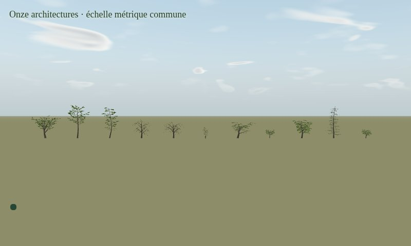
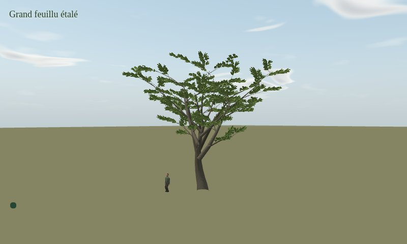
printemps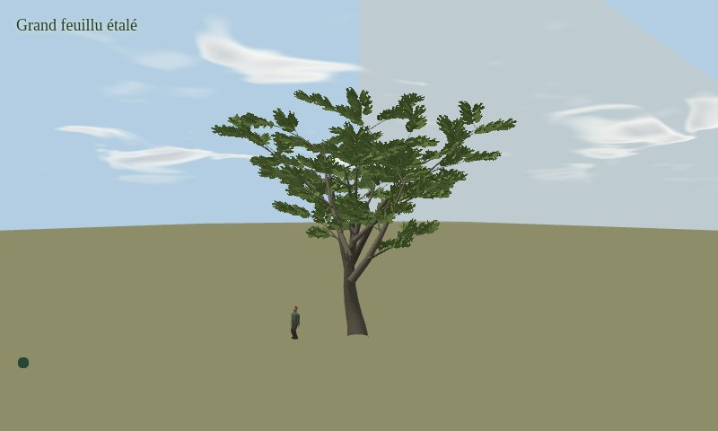
été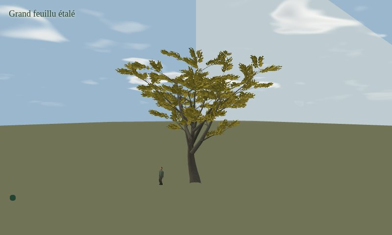
automne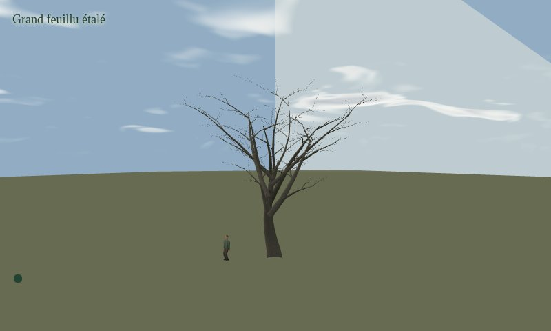
hiverMême arbre, même caméra, quatre niveaux forcés
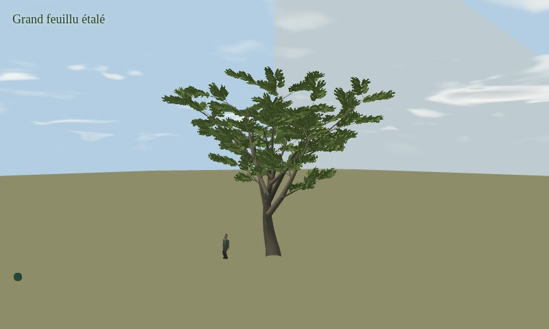
LOD 0 · caméra identique, niveau forcé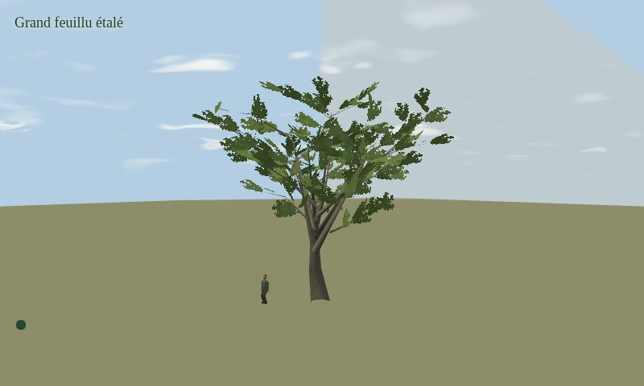
LOD 1 · caméra identique, niveau forcé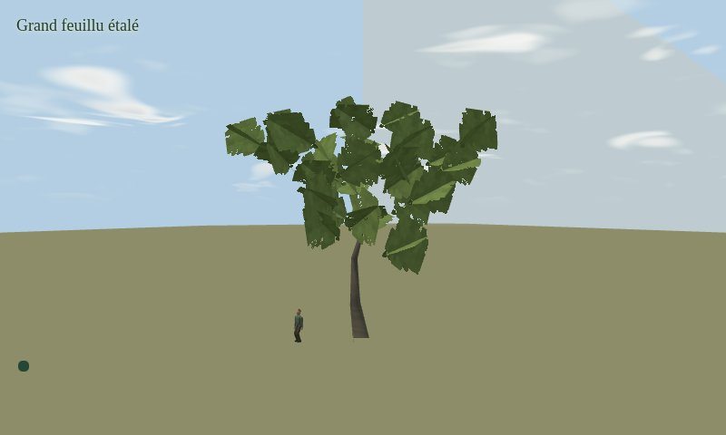
LOD 2 · caméra identique, niveau forcé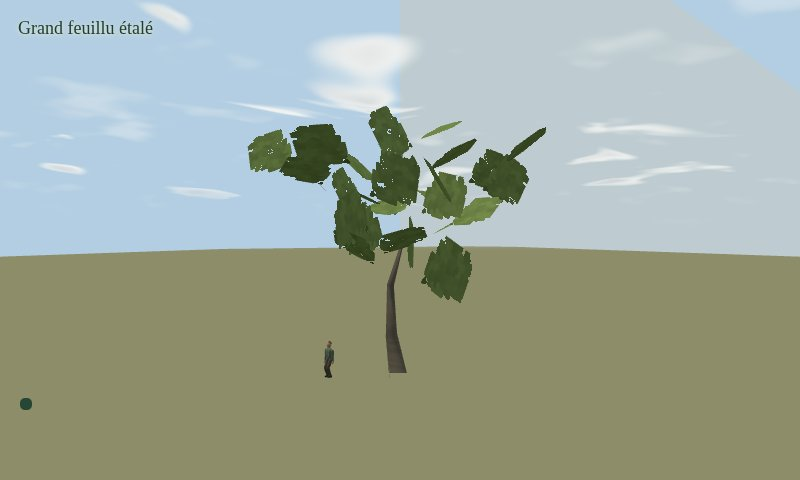
LOD 3 · caméra identique, niveau forcéCes vues révèlent le changement de représentation ; le jeu sélectionne normalement les niveaux selon leur taille projetée et applique un fondu de 0,48 s. Les plans de feuillage sont distribués dans la couronne tridimensionnelle.
Trois profils dans le pilote
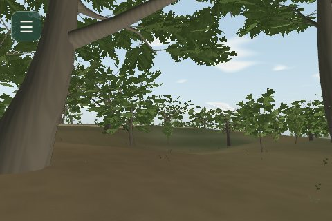
Éco · même caméra dans le pilote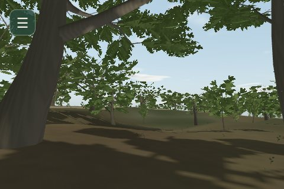
Équilibré · même caméra dans le piloteQualité · même caméra dans le piloteTriangles par modèle source. Les tailles individuelles sont calibrées séparément. Inventaire et politiques · Provenance artistique et licences · Sources géographiques.